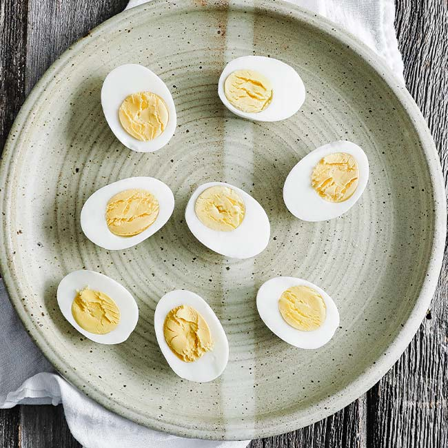

Home
Boiled Egg Recipe

Description
A great traditional dish consisting of one boiled egg.
The recipe isn't that easy to execute but i believe you can make it.
Ingredients
- Egg
- Water
- Salt
- Pepper
- Pot
Steps
Cooking
- Place the egg in the pot.
- Fill the pot with water until it covers the egg.
- If the egg floats, replace the egg since the previous one is rotten.
- Fire up the stove and place the pot on it.
- The setting for the stove is high heat.
- Wait until the water starts to boil.
- Set a timer for 4 mins if you want the egg soft boiled, 5 mins for medium boiled
and 6 mins for hard boiled.
- Turn off the timer.
- Remove the egg from the stove and turn off the stove.
- Add cold water in the pot and wait for 2 mins for the egg to cool off, repeat if necessary.
- Peel the egg.
Serving
- Place the egg on a plate.
- Cut the egg in half.
- Sprinkle salt and pepper.
- Add a drop of olive oil on each half.
Eat
This recipe is accurate and real